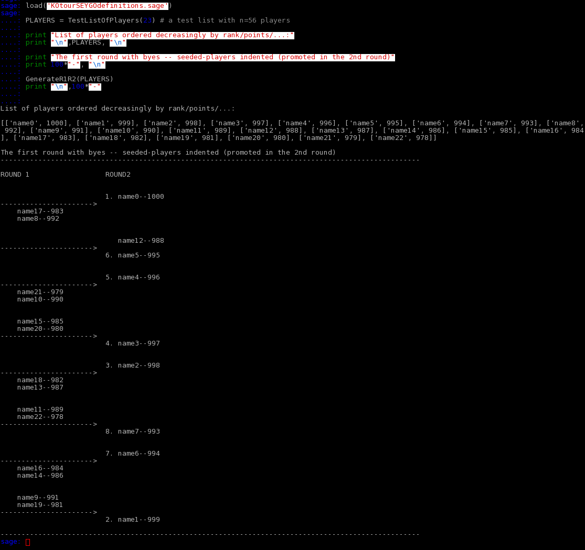
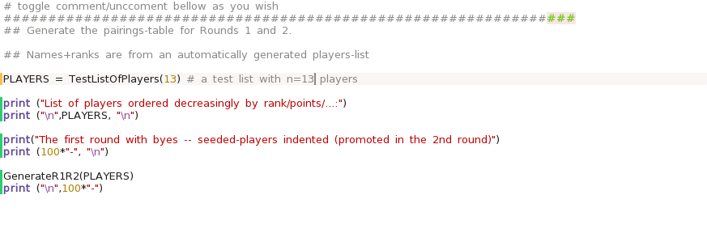
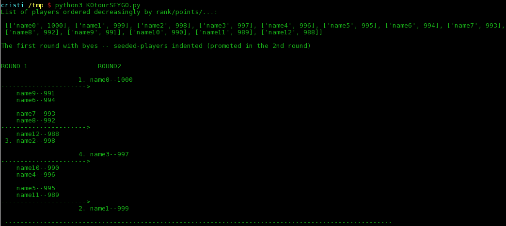
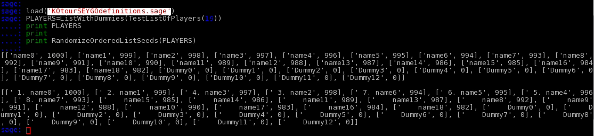
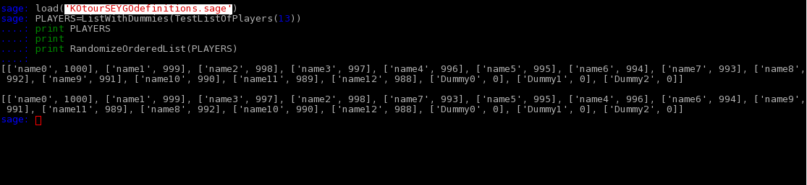
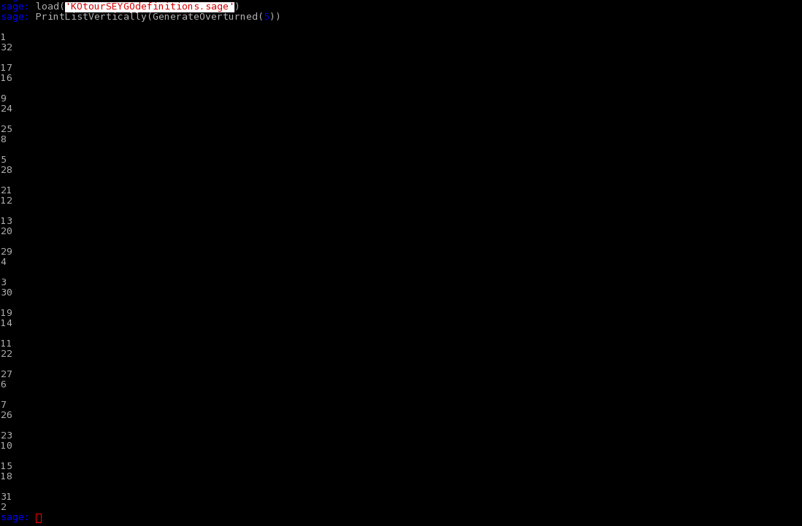
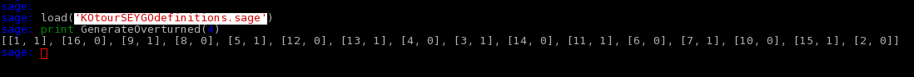

A script that generates the Start Table (Rounds 1-2) of a KO tournament with n>1 players. It is written in
sage
and, with minimal modifications, it runs in
python
, also.
Needs to have
sage
installed. Unzip in a directory and run
sage
in a terminal in that directory.
Runs from the file KOtourSEYGO.sage (comment/uncomment lines or introduce other code, as you need).
sage: runfile KOtourSEYGO.sage
or run from the command line:
sage: load('KOtourSEYGOdefinitions.sage') # load definitions
sage: GenerateR1R2(PLAYERS) # generates the StartTable reading the list of players from a file.
See more commands in screenshots directory.
$ python KOtourSEYGO.py
or
$ python3 KOtourSEYGO.py
Docummentation and test-runs embeded-commented in the scripts.
Given a list of n>1 players, it returns the first 1-2 rounds of a KO tournament.
A player is a list [string, int], where string contains the name of the player and int is its rank (which can be a number – GOR from eurogodatabase or 1000+rank for dan players, 100+rank for dan players, 100-rank for kyu players).
The list has to be ordered decreasingly.
The list can be introduced directly in the sage file, inline, or in a file with a player on each line.
For test runs, a TestStartList can be generated automatically.

Other results can also be obtained using the definitions/functions/methods from the .sage files.





